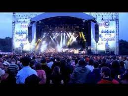
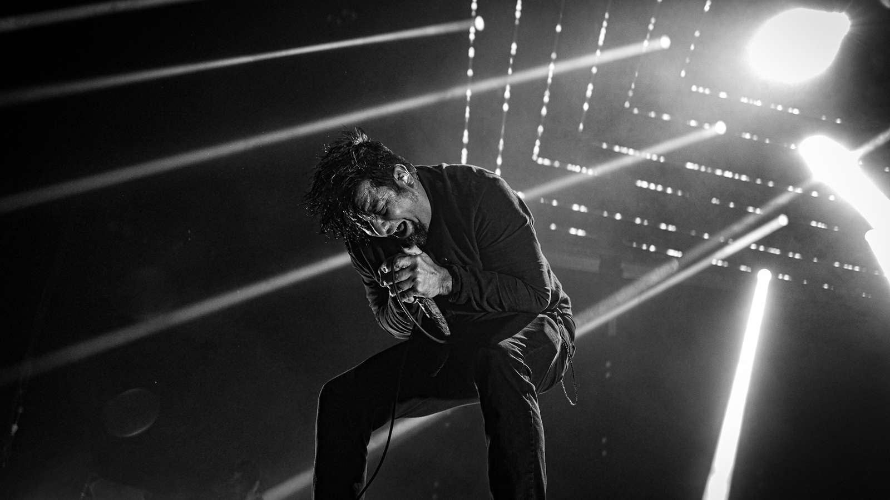
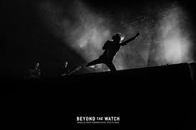

Be quiet and drive (far away)
In 1988 Deftones formed in Sacramento, California. During the early years, the band embraced a heavy nu metal sound, but with the release of the band's third studio album "White Pony" (2000) the band embraced a new direction. It was the first album to include keyboardist and turntablist Frank Delgado while seeing lead vocalist Chino Moreno on rhythm guitar. The album also produced the band's most commercially successful single "Change (In the House of Flies).Today, almost 26 years after their debut Adrenaline, it's worth taking a step back and appreciating the work of this band, not only behind their productions but on stage. From Stephen Carpenter's heavy metal riffs, Chino Moreno's penetrating accent and Frank Delgado's dash of DJing, they have always made the band evolve and add a good dose of strength, quality of interpretation and energy to their fans during their shows. live, where even today we still miss the original bassist Chi Cheng.
War Of The Gargantuans Tour, 1996
Area 4 Festival, 2009
The Press Club, 1997
Día de los Deftones, 2018
Arrow Hall Missianuga, 2003
Meltdown Festival, 2018